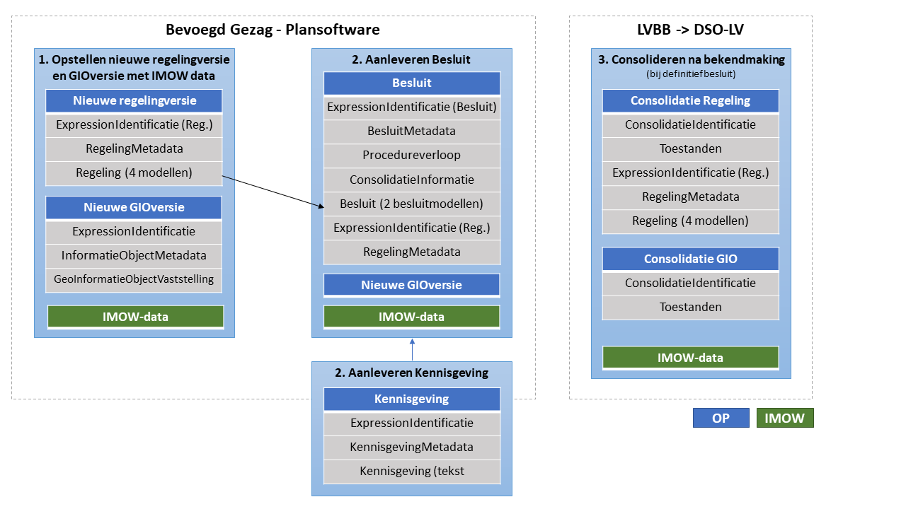

Snelstartgids STOP-XML
Overzicht STOP-XML Modules
Deze leeswijzer beschrijft de invulling van de diverse STOP-XML modules per stap binnen het proces van bekendmaken en consolideren. Het onderstaande figuur geeft een globaal overzicht van de STOP-XML modules per processtap.
De invulling van omgevingswetspecifieke informatie valt onder het Informatiemodel Omgevingswet (IMOW) en is hier niet beschreven. Raadpleeg hiervoor de documentatie van Geonovum: https://www.geonovum.nl/geo-standaarden/omgevingswet/STOPTPOD
Stap 1: Opstellen nieuwe regelingversie en GIOversie met OW data
Het opstellen van een nieuwe versie van een regeling vindt plaats in de plansoftware van het bevoegd gezag. Het kan hierbij gaan om:
een eerste versie van een nog niet bestaande regeling, ook wel initiële regeling genoemd.
een bestaande regeling die door het bevoegd gezag wordt gewijzigd. Het wijzigen van een bestaande regeling stelt eisen aan het beheer van RegelingVersies in de plansoftware.
Een regelingversie gaat gepaard met een STOP-XML modules 'data:ExpressionIdentificatie', 'data:RegelingMetadata' en 'data:RegelingVersieMetadata'. Deze STOP-modules evenals eventuele gerelateerde GIOversie(s) en OW data hebben een gemeenschappelijk 'doel'; een Identificatie van de introductie van nieuwe of aangepaste regelgeving met één moment van inwerkingtreding, één moment waarop de regelgeving geldig wordt en eventueel één moment waarop de geldigheid van de regelgeving eindigt. Zie ook: data:ConsolidatieInformatie (bij het Besluit). Het is van belang dat reeds in stap 1 de samenhang (tussen RegelingVersie, GIOversie en OW-data) geborgd is met een doel in de plansoftware.
STOP-XML Modules nieuwe regelingversie
data:ExpressionIdentificatie van de Regeling
Regeling met hierbinnen de keuze uit vier tekstmodellen/STOP-XML modules
STOP-XML Modules Nieuwe GIOVersie
Stap 2: Aanleveren Besluit
Op een bepaald moment legt het bevoegd gezag de nieuwe Regelingversie en/of GIOversie vast in een bekend te maken besluit in haar plansoftware. Een Besluit kan:
een nieuwe versie van een Regeling bekendmaken (via een initieel besluit); of
de wijzigingen op een bestaande versie van een regeling bekendmaken (via een wijzigingsbesluit).
Een besluit dient aangeleverd te worden met de set samenhangende STOP-modules die hieronder beschreven zijn. In de aanlevering aan de LVBB wordt daarnaast ook informatie van de wordtVersie van de Regeling (de ExpressionIdentificatie en RegelingMetadata), GIOversie(s) en OW-data meegeleverd (zie ook het bronhouderkoppelvlakschema).
STOP-XML Modules Besluit
data:ExpressionIdentificatie van het Besluit
data:BesluitMetadata (met onderscheid hierbinnen tussen definitieve en ontwerpbesluiten)
Besluit met hierbinnen de keuze uit twee modellen/STOP-XML modules
Stap 2a: Optioneel: Kennisgeving bij Besluit
Bij een besluit kan een kennisgeving worden geschreven. Dit is een eigen instrument dat naar een besluit wijst. Net als een besluit bestaat een kennisgeving uit een set samenhangende STOP-modules.
data:ExpressionIdentificatie van de kennisgeving
data:KennisgevingMetadata van de kennisgeving
Stap 3: Consolideren na bekendmaking
Na bekendmaking van een definitief besluit met een juridische inwerkingtredingsdatum kan de LVBB de Toestanden berekenen van de regeling en de GIO(s) die uit het aangeleverde besluit volgen. Ontwerpbesluiten treden niet in werking. O.b.v. een ontwerpbesluit kan een proefversie van een instrument worden samengesteld.
STOP-XML Modules Consolidatie Regeling n.a.v. definitief Besluit
STOP-XML Module Proefversie n.a.v. ontwerpbesluit